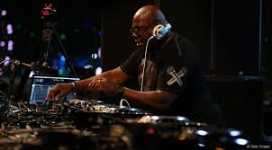

Carl Cox

O mago das 3 pickups
Na década de 1980, Cox era DJ de House e se tornou um dos principais DJs da cena eletrónica. Ele tem se apresentado em inúmeros clubes e eventos pelo mundo e atuou como DJ mensal do Essential Mix na BBC Radio 1. Foi residente na festa conhecida como 'Music is Revolution' todo verão no renomado nightclub, Space Ibiza, de 2001 até 2016.
Cox controla a gravadora Intec Digital, fundada em 1999 como Intec Records. Também tem seu próprio programa de rádio, 'Global'. Em 2017 anunciou que a partir de fevereiro daquele ano não mais trabalharia no programa.
Cox se apresenta no palco de muitos festivais com seu 'Carl Cox & Friends', tais como o Ultra Music Festival, o BPM Festival e o Awakenings.